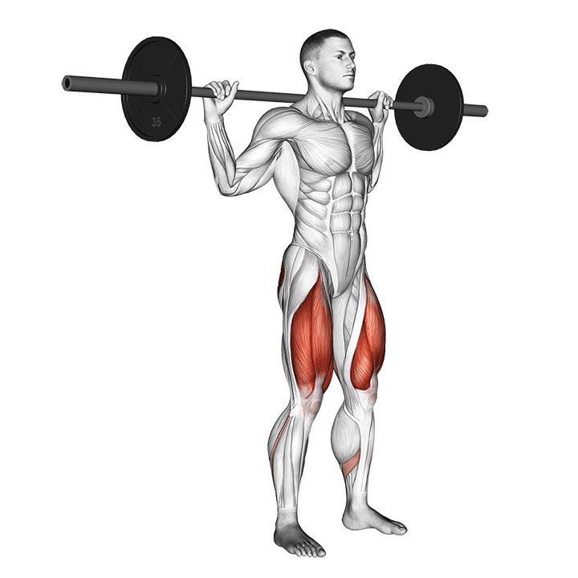

1. Sentadilla con barra
El básico principal del día. Ejercicio clave para ganar fuerza y masa muscular en pierna.
Técnica clave: pies firmes, torso lo más vertical posible dentro de tu mecánica,
bajada controlada y buena profundidad si puedes mantener postura.
Tip: busca que el cuádriceps trabaje en estiramiento, no solo mover peso.
Error común: inclinar demasiado el torso, perder estabilidad en los pies
o subir con la cadera antes que con el pecho.
Registro
Sin registro guardado todavía.